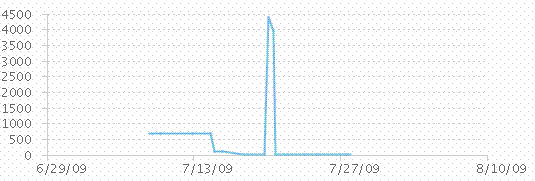
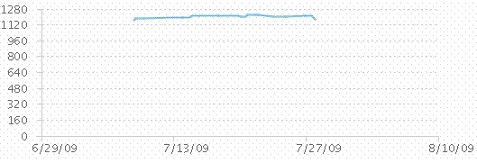

| Code Health |
 |
|
PurposeCode Health calculates the number of unit test and compilation failures over time to help the team understand its confidence level in the stability of their code. Definition
Number of compilation failures = total number of compilations of the codebase that
failed. AnalysisPlotting the two measurements shows important aspects of the health of a codebase, as represented by the builds. In a healthy codebase, these numbers should be at or near zero most of the time. The following chart plots the number of unit test failures over time. Watch out for test failures. They indicate that the team is not properly testing code prior to delivering it.  In the following chart, the number of compilation warnings/failures is plotted over time.  Frequency and reporting
The team monitors this metric throughout the iteration to understand the stability of their code, and
reviews Code Health trends at the end of each iteration. Collection and reporting toolsCode Health data is collected in IBM® Rational® Team Concert®. |
Licensed Materials - Property of IBM |